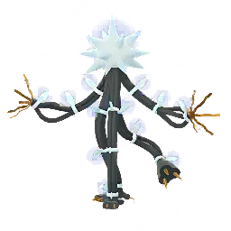
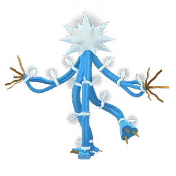

What is this raid boss?
Xurkitree is an Ultra Beast from Pokémon GO that appears through Ultra Wormholes. It is a pure Electric-type raid boss and is best known for its extremely high attack power. While it can deal heavy damage, it doesn’t have much bulk, so it usually goes down fairly quickly in raids.
Why it matters
Strong Electric-type attacker
- One of the top Electric-type attackers currently available in Pokémon GO
- Very effective against:
- Water-type raid bosses (like Kyogre)
- Flying-type raid bosses (like Lugia)
Ultra Beast value
- Part of the limited Ultra Beast roster
- Often returns only during special events, making it valuable to collect
- Useful for both raid attackers and collectors
Raid relevance
- Electric-type attackers with high DPS are not very common
- Xurkitree stands out because of its strong offensive stats
- Works especially well in fast raid clears
Difficulty level
Overall difficulty: Medium
Why it is not too difficult
Low durability
- Very low defense makes it easy to defeat quickly
- It cannot tank sustained damage for long
Simple weakness
- Only weak to Ground-type moves
- Plenty of strong Ground-type counters are available
Best counters
- Groudon (one of the strongest Ground-type attackers)
- Excadrill (fast and efficient Ground damage)
- Garchomp (high DPS Ground attacker)
- Rhyperior (solid bulk with strong Ground moves)
What makes it easier
- Only has one weakness, which simplifies team building
- No complicated typing or mechanics
- Can be defeated quickly with proper counters
What makes it slightly challenging
- High attack power can punish under-leveled Pokémon
- Needs proper Ground-type attackers for fast clears
- Rainy weather can boost its Electric-type damage
Xurkitree – Full Moves Breakdown (PvP + Raids)
Xurkitree is a pure Electric-type Ultra Beast built for damage rather than defense. It hits extremely hard in raids, but it’s also very fragile, which makes move choice important in both PvE and PvP.
- Very high Attack stat
- Low bulk (faints quickly if pressured)
- Strong Electric-type raid attacker
Fast Moves
| Move Name | Type | PvP Use | PvE Use | Notes |
|---|---|---|---|---|
| Thunder Shock | Electric | ⭐⭐⭐⭐⭐ | ⭐⭐⭐⭐⭐ | Best option thanks to very fast energy gain |
| Spark | Electric | ⭐⭐⭐ | ⭐⭐⭐ | Works fine, but noticeably slower energy generation |
Recommended Fast Move: Thunder Shock is the clear choice in almost every situation.
Charged Moves
| Move Name | Type | PvP Use | PvE Use | Notes |
|---|---|---|---|---|
| Discharge | Electric | ⭐⭐⭐⭐ | ⭐⭐⭐ | Low energy cost, useful for pressure and baiting shields |
| Thunderbolt | Electric | ⭐⭐⭐⭐ | ⭐⭐⭐⭐ | Reliable STAB damage option |
| Power Whip | Grass | ⭐⭐⭐⭐⭐ | ⭐⭐⭐⭐⭐ | Important coverage move for Ground, Rock, and Water types |
| Energy Ball | Grass | ⭐⭐⭐ | ⭐⭐⭐ | Usable, but generally outclassed by Power Whip |
Best Charged Moveset:
- Thunder Shock + Power Whip (most flexible overall set)
- Alternative PvP set: Thunderbolt + Power Whip
Raid Boss Moves (When Xurkitree is the boss)
When used as a raid boss, Xurkitree usually runs a simple Electric-focused moveset with one key coverage move.
| Move | Type | Category | Danger Level |
|---|---|---|---|
| Thunder Shock | Electric | Fast | ⭐⭐ |
| Spark | Electric | Fast | ⭐⭐ |
| Discharge | Electric | Charged | ⭐⭐⭐ |
| Thunderbolt | Electric | Charged | ⭐⭐⭐⭐ |
| Power Whip | Grass | Charged | ⭐⭐⭐⭐⭐ |
Moves to watch out for
Power Whip is the main threat in raids because it can punish Ground-type counters, which are normally the safest option against Xurkitree.
| Move | Why it matters |
|---|---|
| Thunderbolt | Consistent high damage |
| Discharge | Fast pressure and shield forcing |
| Electric fast moves | Constant chip damage over time |
PvP moveset summary
Standard PvP set
- Fast: Thunder Shock
- Charged: Discharge + Power Whip
High pressure set
- Fast: Thunder Shock
- Charged: Thunderbolt + Power Whip
PvP role
- Shield pressure and bait-based attacker
- Glass cannon that relies on timing rather than bulk
Raid performance (PvE)
Best raid setup
- Fast Move: Thunder Shock
- Charged Move: Thunderbolt or Discharge
Role in raids
- High DPS Electric-type attacker
Overall performance
- Among the strongest Electric attackers in Pokémon GO
- Only outclassed by select Shadow and Mega Pokémon in specific situations
Xurkitree Performance Guide
Xurkitree performs very differently depending on where you use it. It’s built as a high-damage Electric-type attacker, so it shines in raid-style battles but feels much more limited in PvP and defensive situations.
PvE (Trainer battles & Team Rocket fights)
In general PvE content, Xurkitree behaves like a glass cannon that focuses entirely on damage output.
- Role: Fast offensive attacker
- Strength: Very high Attack stat
- Best use: Quickly defeating Water and Flying-type Pokémon
Why it works well:
- Electric typing gives strong advantage against:
- Water-type Pokémon
- Flying-type Pokémon
- Can take down opponents very quickly in favorable matchups
Main drawback:
- Very low bulk, so it can faint quickly against strong or neutral attackers
Overall: Great damage dealer, but not built to survive long battles.
Raids (Where Xurkitree performs best)
Xurkitree is at its strongest in raid battles where it can fully use its high Electric-type damage.
Best raid targets:
- Kyogre (Water)
- Lugia (Flying/Psychic)
- Gyarados (Water/Flying)
- Ho-Oh (Flying/Fire)
Why it performs so well:
- One of the highest Electric-type DPS options available
- Strong moves like Thunder Shock paired with Discharge or Thunderbolt
- Often outperforms older Electric-type attackers in raw damage
Limitations:
- Faints quickly, so you may need to rejoin battles more often
- Not suitable for tanking charged moves
Summary: One of the best Electric-type raid attackers currently available.
Gyms (Attacking & Defending)
Gym attacking:
- Works well against Water and Flying defenders
- Can clear gyms quickly when matchups are favorable
Gym defending:
- Not recommended
Reason:
- Very low defense makes it easy to defeat
- Weak to Ground-type attackers commonly used in gyms
- Does not last long in defensive situations
Overall: Strong attacker, poor defender.
PvP (GO Battle League)
Xurkitree has impressive damage output, but its lack of bulk limits its consistency in PvP battles.
Strengths:
- Can quickly eliminate Water and Flying types
- High pressure if it reaches charged moves
Weaknesses:
- Faints very quickly in neutral matchups
- Struggles against Ground, Dragon, and Grass cores
- Needs shield advantage to perform well
League breakdown
Great League
- Not usable due to CP limitations
Ultra League
- Niche pick
- Can surprise Water and Flying teams
- Still very fragile overall
Master League
- Situational choice
- High damage but heavily outclassed by top dragons and legendaries
- Needs perfect alignment to succeed
Overall PvP summary: Works as a niche glass cannon rather than a consistent meta pick.
Special cup performance
Performs well in:
- Electric-themed cups
- Water-heavy limited metas
- Flying-restricted formats
Struggles in:
- Open Great and Ultra League formats
- Ground-heavy metas
- Balanced competitive cups
Why it can shine in some cups:
- Limited typings reduce counters
- Electric typing becomes more valuable in restricted formats
Xurkitree Raid Strategy Guide
Xurkitree is not a raid boss you can brute-force solo. It hits hard, but its low defense makes it manageable with the right group size and proper Ground-type counters.
Raid difficulty overview
| Group Size | Difficulty |
|---|---|
| Solo | Not possible |
| Duo | Very difficult |
| Trio | Possible with strong teams |
| 4–6 Players | Comfortable clear |
| 7+ Players | Easy raid |
Solo raids
Xurkitree cannot realistically be soloed due to its high raid HP and strong Electric-type damage output.
- Even max-level counters struggle alone
- Weather and Mega boosts are not enough
- Requires multiple trainers for a clean win
Duo strategy
Duos are possible, but only with strong coordination and top-tier Ground attackers.
Requirements:
- Level 45+ Pokémon
- Strong Ground-type attackers
- Mega or Primal support
- Sunny weather (highly recommended)
Best duo counters:
| Pokémon | Why it works |
|---|---|
| Primal Groudon | Best overall damage and boost support |
| Mega Garchomp | High Ground DPS output |
| Shadow Garchomp | Very high raw damage |
| Landorus Therian | Strong balance of bulk and power |
| Excadrill | Reliable and budget-friendly option |
Duo tips:
- Dodge charged moves when possible
- Keep Mega boost active throughout the fight
- Relobby quickly to avoid DPS loss
- Sunny weather makes a big difference
Trio strategy
Trio raids are much more stable and forgiving compared to duos.
- Works well even without perfect teams
- Less pressure on relobby timing
- More room for mistakes
Beginner strategy
If you're new or using random raid teams, aim for a larger group rather than trying to optimize damage.
- Recommended players: 5–8 trainers
Focus on:
- Using correct Ground-type Pokémon
- Avoiding Electric or Water attackers
- Keeping your team revived and active
Best beginner counters:
| Pokémon | Why it helps |
|---|---|
| Excadrill | Strong and easy to build |
| Rhyperior | Tanky and reliable |
| Golem | Very accessible option |
| Mamoswine | Good general damage output |
Common beginner mistakes:
- Using Water or Flying Pokémon
- Bringing Electric attackers (not effective here)
- Ignoring Ground-type advantage
- Not rejoining after fainting
Intermediate strategy
At this level, raids become much smoother when teams are properly optimized.
- Recommended players: 3–5 trainers
Goal: maximize Ground-type damage and reduce downtime
Strong team core:
| Pokémon | Role |
|---|---|
| Mega Garchomp | Mega boost support |
| Garchomp | Main DPS |
| Excadrill | Reliable damage dealer |
| Landorus Therian | Strong finisher |
Advanced strategy
- Best used in duo or strong trio setups
- Focus on optimized movesets and timing
- Minimize time spent relobbying
Advanced tips:
- Enter raid with pre-built teams ready
- Dodge only key charged attacks
- Coordinate Mega boosts with teammates
Expert strategy
Expert raids focus on speed, not survival.
- Goal: fastest possible clear
- Preferred weather: Sunny
Best Mega options:
| Mega | Reason |
|---|---|
| Mega Garchomp | High Ground boost and DPS |
| Primal Groudon | Best overall raid performance |
Expert tips:
- Preload charged moves before boss attacks
- Rejoin raids instantly after fainting
- Focus on damage output over survival
Dangerous raid boss moves:
| Move | Why it matters |
|---|---|
| Dazzling Gleam | Strong against Dragon counters |
| Power Whip | Threatens Ground and Rock Pokémon |
| Thunder | High burst Electric damage |
Weather impact:
| Weather | Effect |
|---|---|
| Sunny | Boosts Ground-type counters |
| Rainy | Boosts Xurkitree’s Electric attacks |
| Windy | Can slightly boost Dragon attackers |
Xurkitree Raid Counter Guide
Xurkitree is straightforward to counter, but it still punishes unprepared teams. Since it only has one weakness, your entire raid strategy comes down to one thing — bringing strong Ground-type attackers.
Raid boss overview
- Type: Electric
- Weakness: Ground only
- Main strength: Very high Attack stat
- Threat moves: Thunder, Discharge, Power Whip
Top counters
These are the strongest Pokémon you can bring for fast and safe clears.
| Pokémon | Type | Why it’s strong |
|---|---|---|
| Primal Groudon | Ground/Fire | Highest damage output + team boost support |
| Groudon | Ground | Reliable bulk with consistent damage |
| Garchomp | Dragon/Ground | Strong DPS with decent survivability |
| Excadrill | Ground/Steel | Fast attacks and strong spam damage |
| Landorus Therian | Ground/Flying | Great mix of power and consistency |
Why these are top picks:
- They directly target Xurkitree’s only weakness
- High DPS helps reduce raid time significantly
- Some options like Groudon also improve team performance with boosts
Budget and accessible counters
If you don’t have top-tier legendaries or shadows, these options still perform well in group raids.
| Pokémon | Type | Notes |
|---|---|---|
| Rhyperior | Ground/Rock | Easy to build and widely available |
| Mamoswine | Ice/Ground | High damage but quite fragile |
| Donphan | Ground | Solid and budget-friendly option |
| Shadow Nidoking | Poison/Ground | Good shadow damage if available |
| Flygon | Dragon/Ground | Balanced option, slightly lower DPS |
Quick note: These aren’t top-tier, but they work perfectly fine in larger raid groups.
Type effectiveness breakdown
Ground types (best choice)
Ground is the only real counter option here, which makes it mandatory for this raid.
- Ground moves hit Xurkitree for super effective damage
- Electric attacks do not threaten Ground-type Pokémon
- This is the core of every winning strategy
Best Ground attackers:
- Primal Groudon
- Groudon
- Garchomp
- Excadrill
Ice types (limited use)
- Ice alone doesn’t help much here
- Only useful when paired with Ground typing (like Mamoswine)
Dragon types (situational)
- Dragon/Ground Pokémon like Garchomp can work well
- Pure Dragon types are not effective in this matchup
Steel types
- Steel does not deal meaningful damage advantage here
- Mainly defensive, not useful for raid DPS
Other types (not recommended)
| Type | Effectiveness |
|---|---|
| Poison | Not effective |
| Fire | Not effective |
| Water | Not effective |
| Flying | Not effective |
Raid difficulty insight
Xurkitree looks simple on paper, but its high attack stat can still punish weaker teams.
- Only one weakness makes team building very specific
- High damage output can quickly knock out glass cannons
- Clean wins depend heavily on Ground-type coverage
Common mistakes:
- Using Electric types (no advantage in mirror fights)
- Bringing Water or Fire Pokémon expecting neutral value
- Ignoring Ground attackers completely
Raid strategy by group size
1–2 players
- Only possible with maxed teams
- Requires Primal Groudon + Sunny weather
3–5 players
- Comfortable and consistent clears
- Mix of strong Ground attackers works well
6+ players
- Very easy raid
- Even budget teams can contribute meaningfully
Shiny Comparison – Xurkitree
Xurkitree already stands out as one of the most unusual Ultra Beasts, and its shiny form changes its look quite noticeably compared to the regular version.
Normal vs Shiny appearance
Normal Xurkitree
- Bright neon green body
- White, cable-like glowing structure
- Sharp electric visual style
- Feels like a walking power grid
Shiny Xurkitree
- Body shifts to a golden yellow/orange tone
- Electric glow becomes warmer instead of neon
- Cable structure stays white but blends more naturally with the new colors
- Overall look feels more warm and polished compared to the original
Key visual differences
| Feature | Normal | Shiny |
|---|---|---|
| Body Color | Neon green | Gold / orange-yellow |
| Energy Glow | Cool white-green electric glow | Warm golden glow |
| Overall Style | Sharp electric alien design | Warmer, more refined look |
| Rarity | Common form | Rare shiny form |
Is the shiny easy to notice?
Yes — the shiny form is quite easy to spot compared to many other Pokémon shinies because the entire color palette changes.
- The full-body color shift makes it immediately recognizable
- It is not just a slight shade difference
This is why it’s popular among collectors and shiny hunters.
Catch and raid notes
- Shiny odds are the same as other legendary/Ultra Beast raids
- If you encounter a shiny, it will not run
- Use a Pinap Berry if you want extra candy
Collector value
Xurkitree shiny is considered valuable mainly because of its visual redesign and limited availability during raid rotations.
- Ultra Beast status
- Strong visual difference from normal form
- Only available during specific events or raid rotations

Xurkitree
Images are used for informational and educational purposes only. All rights belong to their respective owners.

Shiny Xurkitree
Images are used for informational and educational purposes only. All rights belong to their respective owners.
Evolution & Buddy Distance – Xurkitree
Evolution
Xurkitree does not evolve at any stage. As an Ultra Beast, it exists as a standalone Pokémon with no pre-evolution or evolution line.
- It cannot evolve into or from any other Pokémon
- It remains in its base Ultra Beast form permanently
Buddy distance
As a Legendary/Ultra Beast buddy, Xurkitree requires a long walking distance to earn candy.
| Buddy type | Distance per candy |
|---|---|
| Legendary (Xurkitree) | 20 km per candy |
What this means in practice:
- You need to walk 20 km to earn just 1 candy
- It is one of the slowest Pokémon for buddy candy farming
Why it matters
Candy is important for Xurkitree because it directly affects its raid performance and max potential.
- Needed for powering up
- Required to reach full raid potential
- Useful for long-term investment builds
However, relying on buddy walking alone is not very efficient.
- Not ideal for casual players
- Better methods are usually faster and easier
Best ways to get Xurkitree candy
Rare Candy conversion:
- Fastest way to get extra candy
- Very useful if you raid regularly
Raids:
- Consistent candy rewards from each raid
- Best method during Ultra Beast rotations
Buddy walking:
- Slow but steady passive source
- Works best as a long-term backup method
Common mistakes
- Expecting fast candy from buddy walking (it’s intentionally slow)
- Using Xurkitree as a main walking buddy for farming
- Ignoring Rare Candy as a resource for powering it up
Best Mega Pokémon vs Xurkitree
Xurkitree is weak only to Ground-type attacks, so Mega choices are very straightforward. The main goal here is to boost Ground damage and help your team clear the raid faster.
Top Mega counters
Mega Garchomp
One of the strongest overall options for this raid.
- Dual Ground/Dragon typing with high damage output
- Strong enough to contribute both offense and durability
- Works well in almost any raid group size
Why it’s a top pick:
- Boosts Ground-type damage for the entire team
- Stays on the field longer than most offensive Megas
- Helps speed up raid completion significantly
Mega Swampert
A very reliable and easy-to-use Mega for this raid.
- Strong Ground-type damage output
- Fast energy gain and spam-friendly moveset
- Good balance of cost and performance
Why it’s useful:
- Accessible compared to many other Megas
- Performs consistently across all raid sizes
- Great choice for newer or mid-level players
Primal Groudon
The strongest possible option for this raid.
- Highest Ground-type damage potential
- Extremely bulky compared to other attackers
- Massive team-wide Ground boost
Why it stands out:
- Best overall raid performance in this matchup
- Speeds up clears more than any other Mega
Other useful Mega options
Mega Steelix
- Very tanky and safe to use
- Lower damage but reliable survivability
Mega Camerupt
- Budget-friendly Ground option
- Decent damage with Fire/Ground coverage
Recommended raid setup
A balanced team for Xurkitree raids usually looks like this:
- 1 Mega Ground attacker (Garchomp, Swampert, or Groudon)
- 5 strong Ground-type attackers such as:
- Groudon
- Excadrill
- Garchomp
- Rhyperior
What to avoid
- Electric types (no advantage in mirror matchups)
- Flying types (take super effective damage)
- Water types (no benefit in this raid)
Boost Candy & Catch Bonuses – Xurkitree
When you catch Xurkitree from raids, you also get Candy rewards that are important for powering it up later. Since it’s a rare Ultra Beast, maximizing Candy from each catch makes a big difference over time.
How Candy boosts work
In Pokémon GO, the amount of Candy you get from a catch can be increased using berries and Mega Evolution bonuses.
- Pinap Berry
- Silver Pinap Berry
- Mega Evolution bonus (same-type Pokémon active)
This is especially useful for Xurkitree because Candy is harder to collect compared to regular Pokémon.
Base Candy reward
- By default, catching Xurkitree gives 3 Candy
Pinap Berry bonus
| Item | Effect |
|---|---|
| Pinap Berry | Doubles Candy from the catch |
| Silver Pinap Berry | Doubles Candy and increases catch chance |
Mega Evolution bonus
If you have an active Mega Pokémon of the Electric type during the catch, you can earn extra Candy on top of the base reward.
- Usually gives +1 extra Candy per catch
- Can scale slightly depending on Mega level and bonuses
In the best-case scenario, this can significantly improve total Candy gained per raid encounter.
Why Candy farming matters for Xurkitree
Xurkitree is not easy to farm consistently, so every Candy counts.
- It appears only during specific raid rotations or events
- Powering it up requires a large amount of Candy and XL Candy
- More Candy means faster access to full raid potential
Candy gain comparison
| Method | Candy per catch |
|---|---|
| Normal catch | 3 |
| With Pinap Berry | 6 |
| Pinap + Mega bonus | 7+ |
Best catch strategy
If you want to maximize Candy from Xurkitree raids, a simple setup works best:
- Use Pinap Berry on every throw
- Keep an Electric-type Mega Pokémon active during raids
- Aim for consistent Curveball Excellent throws
Weaknesses of Xurkitree
Xurkitree is a pure Electric-type Ultra Beast, which makes its weakness profile simple. It only has one real weakness, but that weakness is extremely important in raid battles.
Type overview
- Type: Electric
Main weakness
Ground-type (only major weakness)
| Why it matters | Details |
|---|---|
| Super effective damage | Ground-type attacks deal 2× damage to Xurkitree |
| No resistance advantage | Xurkitree has no typing advantage against Ground attacks |
Best Ground counters:
- Groudon
- Excadrill
- Garchomp
- Rhyperior
Ice-type (situational)
- Ice does not hit Xurkitree for super effective damage
- However, some Ice-type Pokémon are still usable due to high raw DPS
No secondary typing advantage
Since Xurkitree is a pure Electric-type, it doesn’t have a secondary typing to reduce weaknesses or add extra resistances.
- All damage planning revolves around its Electric typing
- No hidden defensive typing to complicate matchups
Defensive traits
While it only has one weakness, Xurkitree still has some useful resistances due to its Electric typing.
- Resists Electric-type attacks
- Common Water and Flying matchups are handled indirectly through typing advantages
Raid impact
Xurkitree can deal heavy damage quickly, so ignoring its attack power can be risky in raids.
What makes it dangerous:
- Very high Attack stat
- Fast Electric-type damage output
What counters it effectively:
- Strong Ground-type attackers
- Bulky Pokémon that can survive long enough to maintain DPS
Best strategy against Xurkitree
Recommended team setup:
- Ground-type attackers as the main core
- Mega or Primal Ground support for extra damage boost
Raid tips:
- Sunny weather greatly improves Ground-type performance
- Avoid Electric attackers in mirror situations
- Do not rely on Water or Flying Pokémon for damage advantage
Resistances for Xurkitree
Xurkitree is a pure Electric-type Pokémon, so its defensive profile is quite simple. It doesn’t have many resistances, and most of its performance relies on offense rather than bulk.
Natural resistance
Electric-type resistance
- Takes reduced damage from Electric-type moves
- Often comes into play in Electric mirror matchups
Limited defensive coverage
Outside of its Electric resistance, Xurkitree does not have any additional meaningful resistances.
- It does not resist Ground-type attacks
- It does not resist common attacking types like Fire, Water, Flying, or Steel
Key threat: Ground-types
Since Ground is its only major weakness, it becomes the main focus in both raids and PvP battles.
Common Ground attackers include:
- Groudon
- Garchomp
- Excadrill
How this affects battles
Raids
- Xurkitree deals heavy damage but goes down quickly if not protected by team pressure
- Players rely on fast offensive setups rather than durability
PvP
- It can hit very hard when aligned correctly
- But struggles to survive against Ground-type matchups
- Needs shield support to function effectively
Gyms
- Not suitable for defending gyms
- Lack of bulk and resistances makes it easy to defeat
Conclusion – Xurkitree
Xurkitree is a straightforward but extremely powerful Electric-type attacker. It doesn’t rely on bulk or versatility—instead, it’s built to deal massive damage in a short amount of time, especially in raid battles.
Overall performance summary
PvE (Raids)
Xurkitree performs at a very high level in raid battles and is considered one of the strongest pure Electric attackers in the game.
- Extremely high Attack stat
- Excellent damage output against Water and Flying raid bosses
- Best suited for fast raid-focused battles rather than endurance fights
PvP (Go Battle League)
In PvP, Xurkitree is much more situational. Its low bulk limits its consistency across most matchups.
- Struggles in most neutral and disadvantage matchups
- Can perform well only when shields and alignment are favorable
- Generally not a core meta pick in any league
Role in battle teams
In practice, Xurkitree fits best into raid-focused teams where raw damage matters more than survivability.
- Primary Electric-type raid attacker
- High-damage option for specific matchups
- Useful as a glass cannon that prioritizes speed over defense
Overall, it’s a Pokémon that excels when used for the right purpose—but struggles outside of that niche.
Xurkitree Catch CP (Raid Encounter)
Xurkitree’s CP after a raid encounter depends on its IVs and whether it is boosted by weather. As an Ultra Beast, its CP range is fairly high compared to regular Pokémon, so it’s worth paying attention when catching it.
Base catch CP range (no weather boost)
- Lowest CP (10/10/10 IV): ~1851 CP
- Highest CP (15/15/15 IV): ~1917 CP
Weather-boosted CP (Rainy weather)
When Rainy weather is active, Electric-type Pokémon like Xurkitree receive a weather boost, increasing their CP at encounter.
- Lowest CP: ~2314 CP
- Highest CP (100% IV): ~2396 CP
How to recognize a 100% IV (hundo)
These CP values indicate a perfect Xurkitree:
- Non-weather boosted hundo: 1917 CP
- Weather boosted hundo: 2396 CP
Catch tips
Xurkitree can feel a bit tricky to catch at first, but with the right setup it becomes much easier.
Use Golden Razz Berries
- Best option for securing the catch
- Recommended for all raid encounters
Aim for Excellent Curveballs
- Xurkitree has a large hit circle, making Excellent throws easier to land
- Combining Curveball + Excellent + Golden Razz gives the best success rate
Pay attention to weather
- Rainy weather increases CP but does not change IV chances
- Higher CP doesn’t mean harder catch—just better stats potential
Time your throws
- Wait for Xurkitree’s attack animation to finish before throwing
- This improves consistency and reduces missed throws
Weather Boost for Xurkitree
Weather plays an important role in Xurkitree raids and encounters because it directly affects its Electric-type damage output and encounter CP.
Best weather condition
Rainy weather
Rainy weather is the only condition that directly benefits Xurkitree.
- Boosts Electric-type attacks by ~20%
- Increases raid damage output significantly
- Raises CP for weather-boosted encounters
In this weather, Xurkitree performs at its best and becomes much more valuable in raid battles.
Other weather conditions
Windy weather
- Boosts Dragon and Flying types instead
- Does not improve Xurkitree’s performance
Sunny (Clear) weather
- Boosts Fire, Grass, and Ground types
- No direct impact on Xurkitree
Raid performance impact
In Rainy weather:
- Xurkitree reaches its highest damage potential
- Performs closer to top-tier Electric raid attackers
- Becomes noticeably faster in raid clears
In neutral weather:
- Still a strong Electric attacker
- But slightly behind weather-boosted performance
Catch and level benefits
When Xurkitree appears in weather-boosted conditions, it also affects encounter quality:
- Higher wild encounter level (if applicable)
- Increased CP at catch
- Better chance of higher IV spreads
Is it worth raiding Xurkitree?
Short answer: yes — Xurkitree is absolutely worth raiding if you need a strong Electric-type attacker, especially for raids.
Why Xurkitree is worth raiding
Strong Electric-type attacker
Xurkitree sits among the top Electric-type raid attackers and is often compared with Pokémon like Zekrom and high-powered Shadow Electric types.
- Zekrom
- Shadow Electric attackers
- Mega Manectric (as a support Mega option)
High raid damage output
Its biggest strength is raw damage. Xurkitree is built for fast raid performance rather than durability.
- Very high Attack stat
- Fast-charging Electric moves
- Excellent performance against Water and Flying raid bosses
Best matchups:
- Kyogre raids
- Lugia raids
- Other Water- and Flying-type bosses
Main drawback
The biggest limitation is its low bulk.
- Faints quickly in raids
- Requires frequent revives in longer battles
- Not built for tanking damage
PvP performance
Xurkitree is much less effective in PvP compared to raids.
- Limited survivability
- Struggles against common meta Pokémon
- Outclassed by bulkier Electric types
When you should raid it
Xurkitree is a good investment if you:
- Need strong Electric-type raid attackers
- Regularly participate in raid events
- Want faster clears for Water and Flying bosses
You can safely skip it if you already have strong Electric attackers or mainly focus on PvP content.
Best moveset
- Fast Move: Thunder Shock
- Charged Move: Discharge or Thunderbolt
Personal Raid Experience – Xurkitree
First impression
The first thing you notice in a Xurkitree raid is how unusual it looks. Its tall, cable-like body and fast animations immediately make the encounter feel different from a standard 5★ raid boss.
- Visually striking, almost “wired” appearance
- Fast and slightly chaotic attack animations
- Feels more intense than typical raid bosses at the start
Early battle phase
At the beginning of the fight, Xurkitree’s damage feels steady rather than overwhelming. Most groups get a chance to build momentum here.
- Uses quick Electric-type attacks
- Damage is consistent but manageable
- Teams usually focus on building energy and setting rhythm
Mid battle pressure
This is usually where the raid starts to show its real difficulty. If your team isn’t prepared, fainting starts happening quickly.
- Fast Electric moves begin to stack pressure
- Glass cannon attackers go down early
- Some players need to rejoin mid-fight
Best counter experience
Once strong Ground-type Pokémon come into play, the raid becomes much smoother.
- Tanky Ground attackers significantly stabilize the fight
- Damage output becomes more consistent and controlled
- The raid feels noticeably easier once proper counters are active
Common raid issues
Low bulk teams
- Teams without Ground types tend to faint repeatedly
- This slows down overall raid progress
Wrong counter choices
- Using neutral or Electric Pokémon leads to unnecessary difficulty
- The fight becomes longer than it should be
Over-dodging
- Dodging too frequently reduces overall damage output
Final phase
As Xurkitree’s HP drops, the battle often becomes a mix of remaining Pokémon and relobbies. This is where team efficiency really matters.
- Players may have already used 1–2 relobbies
- Remaining Pokémon are usually Ground-heavy attackers
- The fight becomes more about finishing cleanly than surviving
Completion feeling
Beating Xurkitree feels less like brute force and more like proper raid planning.
- Proper Ground setup makes the difference
- Clean execution leads to fast clears
- The catch encounter feels rewarding due to its rarity and shiny potential
Unique Insight – Xurkitree
A glass cannon that feels tougher than it is
Xurkitree gives a slightly misleading first impression. While it is best known for its massive Attack stat, it doesn’t feel as fragile as many other pure Electric attackers at first glance.
- Extremely high Attack stat for raid damage
- Decent HP compared to many Electric-types
- Still very vulnerable in real combat situations
Electric typing: powerful but narrow
Electric-type attackers like Xurkitree are very straightforward in how they perform. They don’t have complex coverage options — they simply hit very hard when the matchup is right.
This creates a clear pattern:
- Excellent vs Water-type Pokémon
- Excellent vs Flying-type Pokémon
- Limited impact outside these matchups
Where Xurkitree actually shines
In raids, Xurkitree is not a generalist—it is a specialist. Its value spikes heavily in specific encounters where Electric damage is optimal.
- Kyogre-style raids → extremely strong performance
- Flying-heavy bosses → very fast clears
- Neutral matchups → noticeable drop in efficiency
Move efficiency is its real advantage
What makes Xurkitree feel so strong in raids is not just raw Attack, but how quickly it cycles moves.
- Thunder Shock generates energy extremely fast
- Discharge and Thunderbolt allow rapid charged move usage
- Very high damage uptime in short raids
Feels like a Shadow Pokémon (without the downside)
In practice, Xurkitree behaves a lot like a Shadow attacker:
- Huge damage output
- Very low survivability in extended fights
The key difference is that it doesn’t suffer from the Shadow defense penalty, so it remains more stable in group raids than it first appears.
PvP reality check
In PvP formats, raw power alone is not enough. Xurkitree struggles because it lacks the flexibility needed for extended battles.
- Limited coverage options
- Low bulk compared to meta staples
- Relies heavily on shield advantage to function
How to think about Xurkitree
The simplest way to understand it is this:
- Use it when Electric damage is the best option
- Expect it to perform poorly outside of that role
- Think of it as a “specialist raid nuke”, not a general attacker
FAQ – Xurkitree Raid Guide
What is Xurkitree?
Xurkitree is an Electric-type Ultra Beast from the Alola region. It is known for its extremely high Attack stat and glass-cannon style gameplay.
Is Xurkitree good in Pokémon GO?
- Yes — it is one of the strongest Electric-type attackers in the game
- Excellent for raids and PvE content
- Not very useful in PvP due to low bulk
What is Xurkitree weak to?
Xurkitree is weak to:
- Ground-type attacks (main weakness)
What are the best counters for Xurkitree?
Top counters include:
- Groudon (Mud Shot + Precipice Blades)
- Excadrill (Mud-Slap + Drill Run)
- Garchomp (Mud Shot + Earth Power)
- Rhyperior (Mud-Slap + Earthquake)
Can Xurkitree be shiny?
Yes, shiny Xurkitree is available during special events or raids
- Shiny version has a golden-yellow glow variation
Is Xurkitree good for PvP?
Not really
- Very high Attack
- Very low Defense and HP
- Gets knocked out quickly in PvP battles
What is the best moveset for Xurkitree?
PvE (Raids):
- Fast Move: Thunder Shock
- Charged Moves: Discharge / Thunderbolt
How difficult is Xurkitree to defeat in raids?
- Difficulty: ⭐⭐⭐⭐ (Hard but manageable)
- Best with:
- 2–4 strong trainers
- Ground-type teams
Weather boost effect?
- Rainy Weather → boosts Xurkitree (Electric moves)
- Sunny Weather → boosts Ground counters
Is Xurkitree better than other Electric-types?
Yes in most cases:
- Outperforms many Electric attackers due to high Attack stat
Quick Summary
- Best role: Raid attacker (Electric DPS)
- Weak in PvP
- Weak to Ground only
- Top-tier Electric attacker overall
Xurkitree Pokédex Entry
Basic information
- Name: Xurkitree
- Type: Electric
- Category: Ultra Beast
- Generation: VII (Ultra Beasts)
- Designation: UB-03 Lighting
- Origin: Ultra Space
Background
Xurkitree is one of the most unusual Ultra Beasts, resembling a living mass of glowing electrical cables. It was first discovered through Ultra Wormholes and behaves less like a creature and more like a walking power source.
Rather than traditional movement, it appears to “anchor” itself into the ground like roots, drawing and releasing electricity continuously from its surroundings.
Appearance
- Tall structure made of cable-like limbs
- Bright yellow-white electrical glow throughout its body
- No visible facial features
- Plug-shaped hands that resemble power connectors
- Constant static discharge effect around its body
Battle characteristics
In battle, Xurkitree is built entirely around offense. It doesn’t try to survive hits—it tries to end fights quickly with overwhelming Electric-type damage.
- Extremely high Special Attack
- Very low defensive capability
- Best suited for short, high-damage encounters
Stat profile
| Stat | Role |
|---|---|
| Attack | Very high – primary strength |
| Defense | Low – main weakness |
| Stamina | Moderate – slightly better than expected |
Best moveset
- Fast move: Thunder Shock (fastest energy gain)
- Charged moves: Discharge / Thunderbolt
Raid role
Xurkitree is best understood as a specialist raid attacker rather than a general-purpose Pokémon.
It performs extremely well when the matchup favors Electric damage, especially against Water and Flying-type raid bosses.
- Excellent vs Kyogre-style Water raids
- Strong vs Flying raid bosses like Lugia and Ho-Oh
- Less effective in neutral or Ground-heavy encounters
PvP performance
In PvP, Xurkitree is a niche pick. Its damage is impressive, but it struggles to survive long enough in most matchups.
- Too fragile for consistent open league play
- Can work in limited or themed cups
- Relies heavily on shield advantage to function
Type matchups
Xurkitree follows a very simple matchup pattern—when it’s good, it’s very good, but it doesn’t have much flexibility.
Performs well against:
- Water-type Pokémon
- Flying-type Pokémon
- Some Steel-type targets
Struggles against:
- Ground-type Pokémon (its biggest threat)
- Rock-type attackers
- Neutral matchups where it cannot use super-effective pressure
Xurkitree Catch
Why Xurkitree is difficult to catch
Xurkitree isn’t just rare—it also feels a bit tricky during the catch phase because of its movement and low base catch rate as a Legendary Ultra Beast.
- Very low base catch rate (~2%)
- Frequent attack animations that disrupt timing
- Fast, unpredictable movement pattern
- Smaller timing window for consistent Excellent throws
How experienced players handle it
Most players rely on timing rather than speed. The key is not rushing throws and instead waiting for clear attack cycles.
- Wait for the attack animation to finish before throwing
- Keep your timing consistent instead of rushing
- Focus on controlled curveball throws
Circle lock technique
One of the most reliable methods is the circle lock approach. It helps stabilize Excellent throw consistency.
- Hold the Pokéball until a comfortable Excellent circle size appears
- Let Xurkitree attack first
- Throw immediately after the animation ends
Berry choice matters
Golden Razz Berries are almost always the standard here because of how low the base catch rate is.
- Golden Razz = safest and most consistent option
- Silver Pinap = used only if you're confident with throws
Getting more Premier Balls
The number of Premier Balls you receive directly affects your catch chances, so raid performance matters more than most players realize.
- Higher damage contribution = more balls
- Best Friend bonus improves rewards
- Team performance affects overall ball count
Throw consistency
In most successful catches, consistency matters more than aggressive throwing.
- Nice → Great → Excellent all work, but Excellent gives the best odds
- Curveballs should always be used
- Small, controlled throws are more reliable than fast flicks
Common mistakes players make
- Throwing during the attack animation
- Switching berries too often
- Rushing throws under pressure
- Ignoring circle size control
Simple catch flow (what actually works)
A typical successful approach looks like this in practice:
- Use Golden Razz Berry
- Wait for attack animation
- Lock circle at comfortable Excellent size
- Throw a calm curveball
- Repeat without rushing
Key takeaway
Xurkitree isn’t hard because of mechanics—it’s hard because players rush. Once timing becomes consistent, catches feel much easier and more predictable.
Xurkitree Raid – Common Mistakes Guide
Bringing the wrong Pokémon types
One of the most common issues in Xurkitree raids is using Pokémon that actually make the fight harder instead of easier.
- Water-types and Flying-types take heavy Electric damage
- Neutral Pokémon often underperform in DPS
- Teams end up fainting much faster than expected
In most cases, the safest and most effective approach is simple: stick to Ground-types for maximum efficiency.
Ignoring Xurkitree’s main weakness
Xurkitree has a very straightforward weakness profile, but many players still overlook it in practice.
- Ground-type attacks deal super effective damage
- Ground Pokémon also resist Electric moves
- This creates both offensive and defensive advantage
Top-performing options like Groudon, Excadrill, Garchomp, and Rhyperior consistently make raids much smoother.
Taking charged moves head-on
Xurkitree’s charged attacks can hit surprisingly hard due to its high Attack stat, especially on fragile Pokémon.
- Thunderbolt and Power Whip can quickly KO glassy attackers
- Many teams lose time by not reacting to charged moves
Dodging isn’t mandatory for every hit, but avoiding key charged attacks can significantly improve survival in smaller groups.
Using Electric or Ice attackers blindly
Some players assume any strong attacker will work, but Xurkitree punishes that assumption.
- Electric attackers are resisted and become inefficient
- Ice attackers deal only neutral damage and often lack bulk
This usually results in lower DPS and more frequent fainting, which slows down the entire raid.
Poor team balance
Teams made entirely of glass cannons tend to struggle more than expected against Xurkitree.
- Constant fainting reduces overall damage output
- Relobbying slows down raid progress
A more stable setup usually includes a mix of tankier Ground-types and high DPS attackers.
Ignoring weather advantage
Weather plays a much bigger role than many players realize in this raid.
- Rainy weather boosts Xurkitree’s Electric damage
- Sunny weather boosts your Ground counters, making raids much easier
If possible, Sunny weather provides a clear advantage for raid success.
Skipping Mega support
Not using Mega Pokémon in a raid group often leaves extra damage on the table.
- Mega Ground-types increase overall team damage
- They also improve raid speed significantly in coordinated groups
Mismanaging raid flow
Small mistakes like slow rejoining or ignoring charged move timing can add up quickly.
- Delays during relobby reduce total DPS
- Not using charged moves properly lowers damage output
Efficient teams usually pre-build parties and rejoin immediately after fainting.
Using auto-select teams
Relying on auto-selected teams is one of the fastest ways to weaken your raid setup.
- Often picks wrong typings
- Mixes low DPS Pokémon
- Ignores optimal Ground counters
Manually building a Ground-focused team is always more reliable.
Related Posts
You may also find these Pokémon GO raid guides helpful: